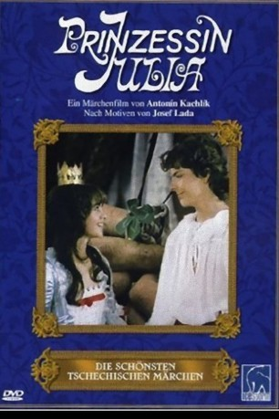

#10334 Prinzessin Julia
 
 IMDB-Wertung: 6.1 / 10
IMDB-Wertung: 6.1 / 10  Metascore: 0
Metascore: 0 
Die hübsche Prinzessin Julia soll auf Wunsch des Landes mit einem reichen Prinzen verheiratet werden. Da sie dieses nicht will, flieht sie vor der Hochzeit und findet unerkannt Unterschlupf bei einem kleinen Wanderzirkus. Doch alle Soldaten des Landes suchen nach Prinzessin Julia…
Jahr: 1987
Dauer: 89 Minuten
FSK: 6
Land: Tschechoslowakei Studio: Filmové studio BarrandovTonspuren:
Untertitel:
Auflösung: SD (924x720) Größe: 2611 MB
Genre: Komödie, Fantasy
Regisseur: Antonín Kachlík
Drehbuch: Josef Lada, Jitka Pistoriusová
Soundtrack: Milos Vacek
Darsteller:
- Lucie Tomková als Princess Julia
- Petr Mikulá als Franta Kuldan
- Jindrich Bonaventura als Brcál
- Oldrich Vlach als King
- Václav Babka als Mulisák
- Jan Skopecek als Svehna
- Lubomír Kostelka als Nánin
- Pavel Pípal als Principál
- Václav Mares als Dejmor
- Jaroslava Pokorná als Hulahopová
- Ludek Kopriva als Pysvejc
- Gustav Opocenský als Luciper
- Václav Sloup als Nebuc
- Karel Hlusicka als Legate
- Oldrich Velen als Butler
- Jirí Lír als Court artist
- Milan Nedela als
- Tatána Fischerová als Queen
- Libor Zídek als Doleza
- Johana Tesarová als Principálová
- Ladislav Krivácek als Haramás
- Karel Engel als
- Bohumil Vávra als
- Ondrej Miksícek als Boy
- Hana Soucková als
- Miroslav Vlcek als
Datei: X:\Märchen\Prinzessin Julia (1987, FSK6, 924x720).mkv seit 29.12.2018
Festplatte: Kinder-Filme+Trick
 Es gibt insgesamt 61 Filme in der Gruppe 'Märchen'
Es gibt insgesamt 61 Filme in der Gruppe 'Märchen'